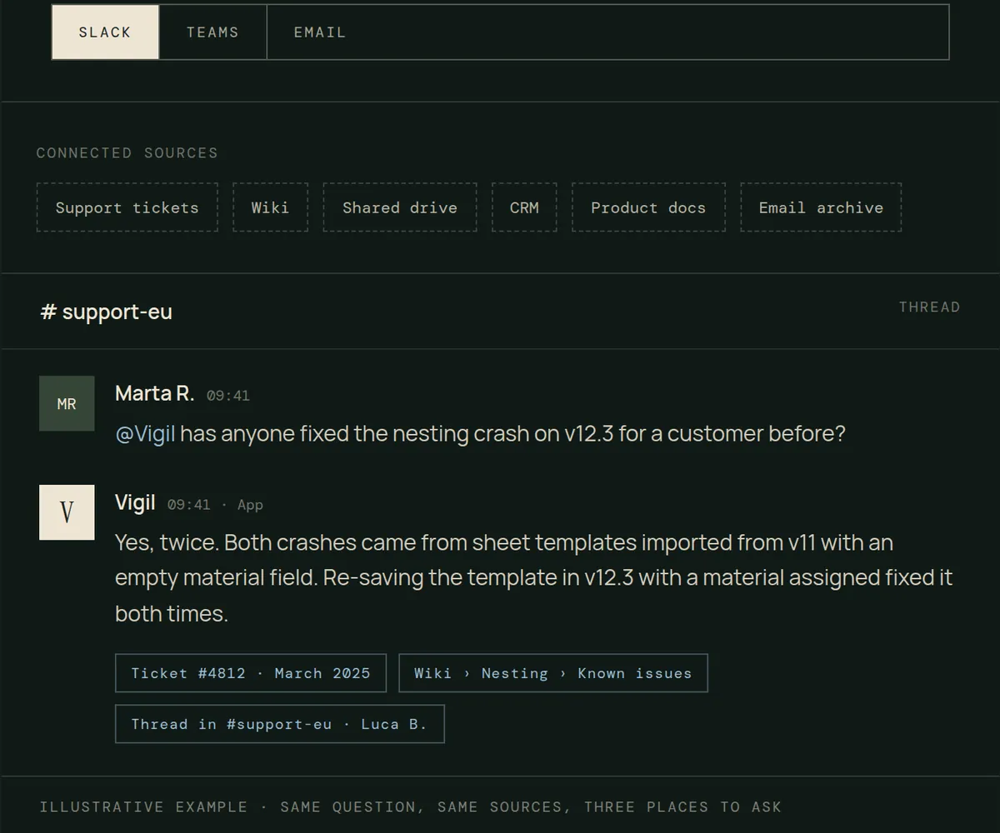
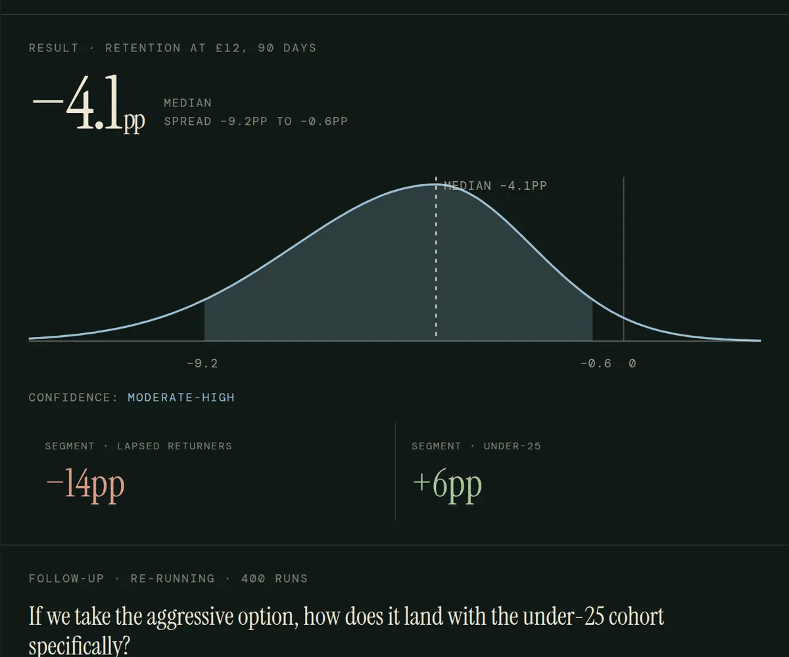
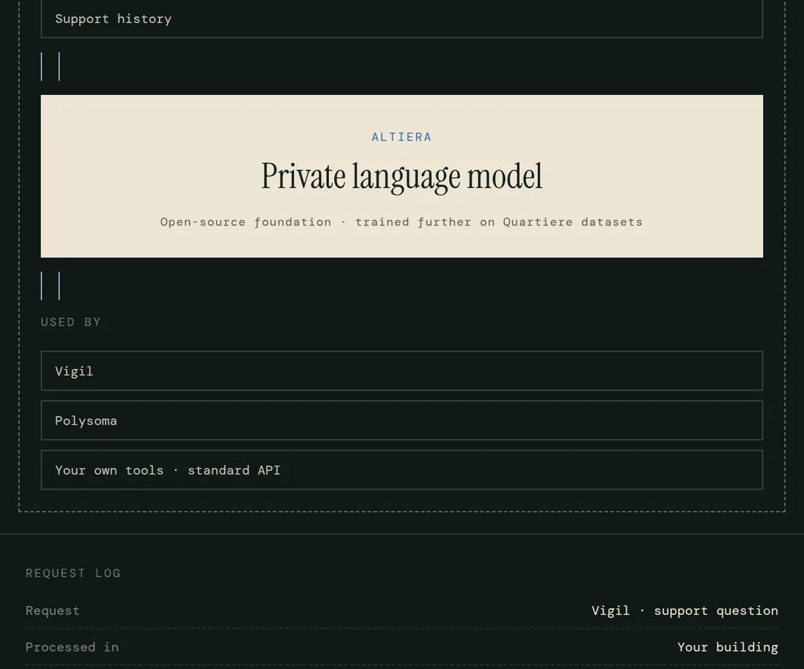

We build proprietary systems for recurring kinds of work and use them when they are the fastest route to a result, alongside whatever your business already runs. Each one is in daily use in our own operations first.
Together they extend what people can see, understand, decide and do. None of them is required: we use them when they fit the work better than the alternatives.

01 / Vigil Company brainConnect documents, tickets, conversations and systems, and ask from Slack, Teams or email. Anyone gets a sourced answer from what the company already knows.

02 / Polysoma Decision simulationPut a decision in front of a population built from what people actually did, and get a distribution of outcomes with a stated confidence level.

03 / Altiera Private language modelOur own language model, built on a proven open-source foundation and trained further on our own datasets. It runs on your servers or in a European cloud.
Turn scattered community and audience behaviour into a living picture of what people want, feel and do.
Your data stays yours. It runs where you choose, and it never trains a model for anyone else.
Tell us about the work. We will tell you whether one of our systems fits, or whether something you already own will do.
Get in touch →